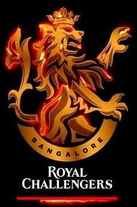
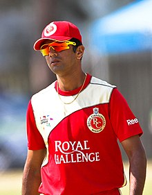
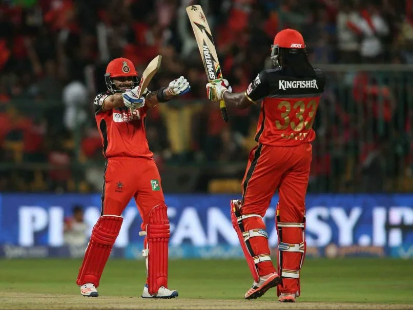
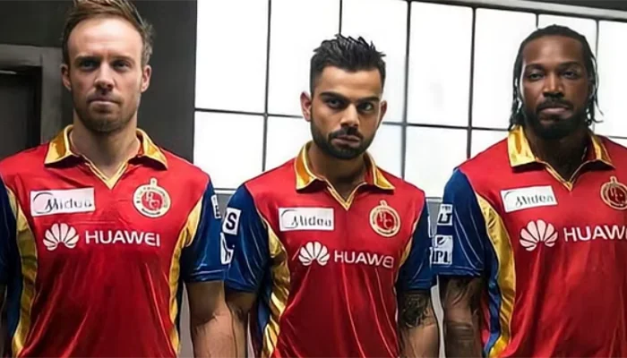
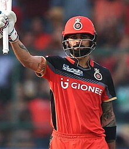

Royal Challengers Bengaluru, formerly known as Royal Challengers
Bangalore, are a professional franchise cricket team based in Bengaluru, Karnataka, competing in the Indian
Premier League (IPL). Founded in 2008 by United Spirits, the team is named after the company's liquor brand,
Royal Challenge. The M. Chinnaswamy Stadium in Bengaluru serves as their home ground.
Royal Challengers have finished as runners-up on three occasions, in 2009, 2011, and 2016, and have qualified
for the playoffs in nine seasons. The franchise has also competed in the Champions League Twenty20, finishing as
runners-up in the 2011 season. RCB is valued at $69.8 million, making them one of the most valuable IPL
franchises. As of 2024, the team was captained by Faf du Plessis and is coached by Andy Flower.
Royal Challengers Bengaluru also hold two important IPL records, for the lowest total score made in an innings
(49, against Kolkata Knight Riders) and for the highest total score conceded in an innings (287, against
Sunrisers Hyderabad).
HISTORY
2008–2010: Initial seasons
Main articles: Royal Challengers Bangalore in 2008, 2009, and 2010
In September 2007, the Board of Control for Cricket in India (BCCI) announced the establishment of the
Indian Premier League (IPL), a Twenty20 competition set to begin in 2008. On 24 January 2008, an auction
was held in Mumbai for the league's teams, which represented eight different cities in India, including
Bengaluru. The Bangalore franchise was acquired by Vijay Mallya for US$111.6 million, making it the
second-highest bid, slightly less than Reliance Industries' US$111.9 million bid for the Mumbai Indians.

Rahul Dravid was the team's icon player in 2008.
Ahead of the 2008 player auction, the IPL designated Rahul Dravid as the icon player for the Bangalore
franchise. This designation ensured that Dravid would be paid 15% more than the highest bid player at the
auction. The franchise acquired several prominent Indian and international players, including Jacques
Kallis, Anil Kumble, Zaheer Khan, Mark Boucher, Dale Steyn, and Cameron White. In the second round of the
auction, they also signed Ross Taylor, Misbah-ul-Haq, and India under-19 World Cup-winning captain Virat
Kohli. The franchise named Dravid as the captain of the team and appointed Venkatesh Prasad as the head
coach. The team struggled in the inaugural season, winning only four out of their 14 matches and
finishing seventh in the eight-team table.[10] Dravid was the sole player to score more than 300 runs in the
tournament, and the team even had to bench their most expensive foreign player, Kallis, for several matches
due to his poor form. Midway through the season, the string of failures led to the sacking of CEO
Charu Sharma, who was replaced by Brijesh Patel. Mallya publicly criticised Dravid and Sharma for their
selection of players at the auction, stating that his "biggest mistake was to abstain from the selection of
the team." Eventually, the chief cricketing officer of the franchise, Martin Crowe, resigned and Prasad
was replaced by Ray Jennings as the head coach.
At the 2009 player auction, the franchise signed Kevin Pietersen for a record US$1.55 million, making him
the most expensive player alongside Andrew Flintoff (Chennai Super Kings). They also traded Zaheer Khan
for Robin Uthappa with the Mumbai Indians and brought in local batsman Manish Pandey. Due to general
elections in India, the tournament was held in South Africa.[18] Pietersen was named captain, but after a
string of initial losses, Anil Kumble took over the captaincy when Pietersen left for national duty.[19]
RCB's performance improved under Kumble, winning six of their last eight matches to finish third in the
league table. They defeated Chennai Super Kings in the semi-final but fell short by six runs in the
final against Deccan Chargers.
Ross Taylor was one of the top performers for RCB in 2009 and 2010.
In 2010, the Royal Challengers, under Kumble's captaincy, secured seven wins from 14 matches, accumulating
14 points. Tied with three other teams for a playoff spot, their superior net run rate qualified them for
the semi-finals. In the semi-final, they were defeated by the table-toppers, the Mumbai Indians, by 35
runs. However, the Royal Challengers secured a convincing nine-wicket win over the defending champions,
the Deccan Chargers, in the third-place playoff, thus qualifying for the 2010 Champions League Twenty20.
Kumble retired at the conclusion of the Champions League, having led the team to the semi-finals of both the
IPL and the CLT20 that year.
2011–2012: IPL and CLT20 finals
Main articles: Royal Challengers Bangalore in 2011 and 2012
On 8 January 2011, the IPL Governing Council held the auction for the fourth season of the league.
Franchises had the option of retaining a maximum of four players for a sum of US$4.5 million.[27] However,
RCB retained only Virat Kohli, leaving their other players to re-enter the auction pool.

During the auction, Bangalore made significant acquisitions, including Tillakaratne Dilshan, Zaheer Khan, AB
de Villiers, Daniel
Vettori, Saurabh Tiwary, Dirk Nannes, and Cheteshwar Pujara.[28] Daniel Vettori was named captain for the
season.[29] RCB began their campaign with a win over the newly formed Kochi Tuskers Kerala.[30] However,
they faced three consecutive defeats against Mumbai Indians, Deccan Chargers, and Chennai Super
Kings.
Dirk Nannes was replaced by Chris Gayle because of an injury.[34] Gayle's inclusion led
RCB to a seven-match winning streak.[35][36] In their final league match, RCB defeated defending champions
Chennai Super Kings, securing the top position in the points table.[37] They lost the final, again facing
the Super Kings, by 58 runs. Chris Gayle was named Man of the Tournament.[38] Royal Challengers Bangalore
reached the 2011 Champions League Twenty20 semi-finals after finishing runner-up in the IPL. They won their
final group match against Southern Redbacks on the last ball and beat New South Wales Blues in the
semis. They lost the final to Mumbai Indians.
Before the 2012 auction, RCB retained Chris Gayle and secured Andrew McDonald from Delhi Daredevils.[42][43]
In the auction, RCB acquired Vinay Kumar and Muttiah Muralitharan.[44] RCB began the 2012 IPL season without
Chris Gayle, who was recovering from an injury.[45] AB de Villiers and Muttiah Muralitharan contributed to a
winning start against Delhi Daredevils.[46] RCB won eight out of their sixteen games but failed to qualify
for the playoffs.[47][48] Gayle was the highest run-scorer of the tournament with 733 runs, including a
century.[49]
2011–2012: IPL and CLT20 finals
Main articles: Royal Challengers Bangalore in 2013, 2014, and 2015
Before the 2013 auction, RCB released Mohammad Kaif, Charl Langeveldt, Dirk Nannes, Luke Pomersbach, and
Rilee Rossouw.[50] At the auction, they acquired Christopher Barnwell, Daniel Christian, Moises Henriques,
Ravi Rampaul, Pankaj Singh, R. P. Singh, and Jaydev Unadkat.[51] Virat Kohli replaced Daniel Vettori as
captain and remained in that role until 2021.[52][53] During the IPL season, RCB finished fifth in the group
stage points table with 9 wins from 16 matches, failing to qualify for the playoffs.[54] Chris Gayle was the
second highest run scorer of the tournament, behind Michael Hussey of the Chennai Super Kings, while Vinay
Kumar was the team's highest wicket-taker with 23 wickets.

Before the 2014 auction, RCB retained AB de Villiers, Chris Gayle, and Virat Kohli from previous
seasons.[57] The players bought in the 2014 auction included Albie Morkel, Mitchell Starc, Parthiv Patel,
Ashok Dinda, Nic Maddinson, Varun Aaron, Yuzvendra Chahal, Vijay Zol, and Yuvraj Singh, who was the most
expensive player at ₹14 crore (equivalent to ₹22 crore or US$2.7 million in 2023), among others.[58] Daniel
Vettori replaced Ray Jennings as the head coach of the team.[59] The first phase of the IPL was held in the
UAE and the second phase in India.[60] RCB finished 7th in the points table and did not qualify for the
playoffs.[61] De Villiers was the highest run-scorer for the team with 395 runs, while Varun Aaron took the
most wickets, claiming 16.[62][63]
Before the 2015 auction, RCB secured Manvinder Bisla from Kolkata Knight Riders and Iqbal Abdulla from
Rajasthan Royals, as well as Mandeep Singh from Kings XI Punjab during the transfer window.[64] In the
auction, they bought Daren Sammy, Sean Abbott, Subramaniam Badrinath, Sarfaraz Khan, and Dinesh Karthik,
among others.[65] Royal Challengers started their season with a win against KKR at Eden Gardens in
Kolkata.[66] During the group stage, they won a total of seven out of fourteen matches, finishing in third
place on the points table.[67] In the playoffs, they defeated Rajasthan Royals in the Eliminator by 71
runs.[68] However, in the second qualifier against the Chennai Super Kings, RCB lost by 3 wickets, knocking
them out of the tournament.[69] AB de Villiers, Virat Kohli, and Chris Gayle were the 4th, 5th, and 6th
highest run-scorers of the season, respectively, while Yuzvendra Chahal was the team's highest wicket-taker
and the 3rd highest overall in the season.[70][71]
2011–2012: IPL and CLT20 finals
Virat Kohli was the leading run-scorer of the 2016 season with 973 runs, the highest ever in
IPL history.
Amid financial scandals involving owner and chairman Vijay Mallya, Amrit Thomas became the chairman of the
Royal Challengers.[72] In the 2016 season, RCB introduced different jerseys for home and away matches.[73]
During the player auction, they acquired Shane Watson, Kane Richardson, Stuart Binny, Travis Head, and
Samuel Badree, among others.[74] Additionally, KL Rahul and Parvez Rasool joined RCB from Sunrisers
Hyderabad.[75] RCB won their first match of the season against Sunrisers, with AB de Villiers and Virat
Kohli scoring 82 and 75 runs, respectively.[76] However, they struggled in the next six matches, securing
only one win against Rising Pune Supergiant, which made it challenging to qualify for the playoffs. However,
RCB qualified for the playoffs, losing only one match in their next seven games.[77] They set a record by
defeating the Gujarat Lions with a winning margin of 144 runs, the highest in IPL history.[78][a] RCB
finished the group stage in second place on the points table with 18 points.[80] In the playoffs, they faced
Gujarat Lions in Qualifier 1 at their home ground, M. Chinnaswamy Stadium, and won by 4 wickets, advancing
to their third final in nine seasons.[81] In the final against Sunrisers Hyderabad in Bangalore, RCB lost by
8 runs, ending the season as runners-up for the third time in IPL history.[82] Yuzvendra Chahal and Shane
Watson were the second and third highest wicket-takers of the tournament, while Virat Kohli won the Orange
Cap for scoring the most runs in the tournament, amassing 973 runs—the highest ever in IPL
history.

In the 2017 player auctions, the Royal Challengers acquired Tymal Mills, Aniket Choudhary, Pawan Negi,
Praveen Dubey, and Billy Stanlake.[86] Mitchell Starc parted ways with the team to rehabilitate ahead of the
Champions Trophy, prompting the management to replace him with Tymal Mills.[87][88] The season for RCB was
impacted by injuries, with skipper Virat Kohli and AB de Villiers missing the initial matches. This led to
Shane Watson stepping in as the interim captain. Batsmen KL Rahul and Sarfaraz Khan were also ruled out for
the season due to prolonged injuries.[89] RCB finished at the bottom of the table, losing ten out of their
fourteen matches.[90] In a match against the Kolkata Knight Riders, RCB was all out for just 49 runs,
marking the lowest score ever in an IPL match.[91][92] Virat Kohli was the leading run-scorer for the team
with 308 runs in the tournament, while Pawan Negi took the most wickets, claiming 16.[93][94]
Ahead of the 2018 IPL, RCB retained Virat Kohli, AB de Villiers, and Sarfaraz Khan.[95] During the auction,
they acquired notable players such as Brendon McCullum, Chris Woakes, Colin de Grandhomme, Moeen Ali,
Quinton de Kock, Umesh Yadav, and Yuzvendra Chahal, among others.[96] In January 2018, Gary Kirsten was
appointed as the batting coach, and Ashish Nehra took on the role of bowling coach.[97] In the group stage,
RCB finished sixth in the points table, failing to qualify for the playoffs.[98] Virat Kohli was the team's
leading run-scorer, while Umesh Yadav took the most wickets.[99][100]
In August 2018, Gary Kirsten was appointed as the head coach of the Royal Challengers Bangalore, replacing
Daniel Vettori.[101] During the 2019 IPL auction, the team acquired Shivam Dube, Shimron Hetmyer, Heinrich
Klaasen, and Devdutt Padikkal, along with other key players.[102] During the season, Dale Steyn joined the
team, replacing the injured Nathan Coulter-Nile.[103] Steyn played only two games before being ruled out of
the tournament due to a shoulder injury.[104] In the group stage, RCB played 14 games, winning five, and
finished at the bottom of the table.[105] Virat Kohli was once again the highest run-scorer for the team,
while Yuzvendra Chahal was the highest wicket-taker.[106][107]